長期トレンド
JKMとJEPXシステムプライスの推移グラフ
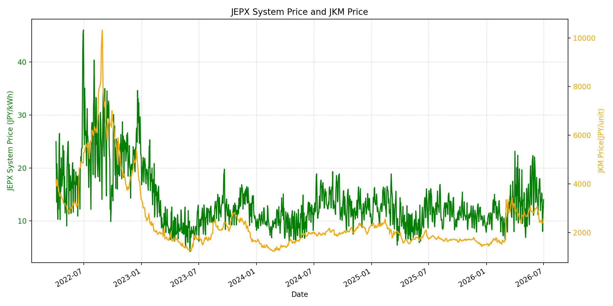
WTIの推移グラフ
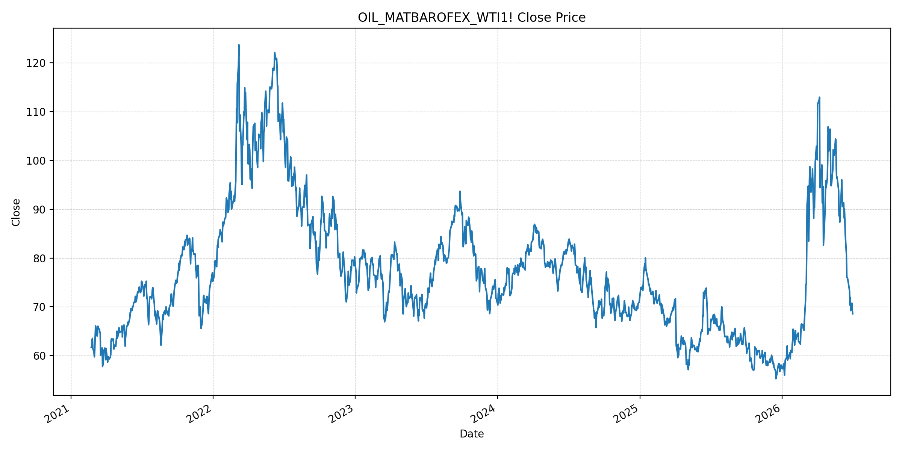
JEPXエリアプライスグラフ（直近一年分）
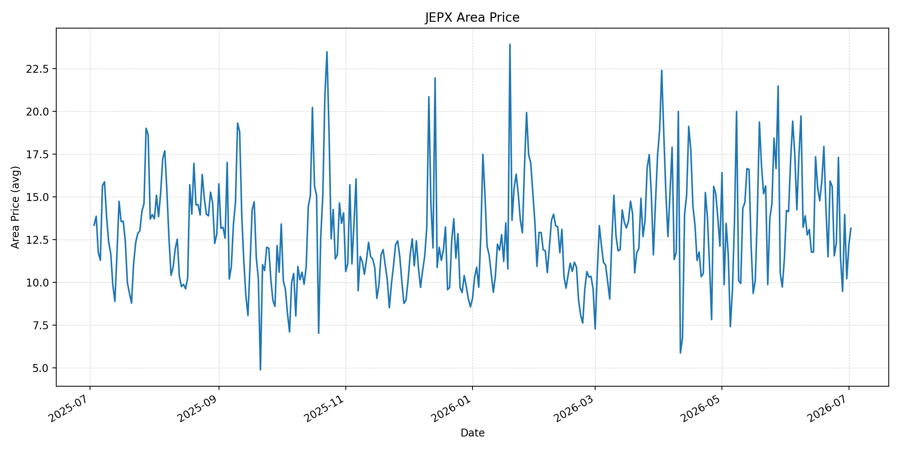
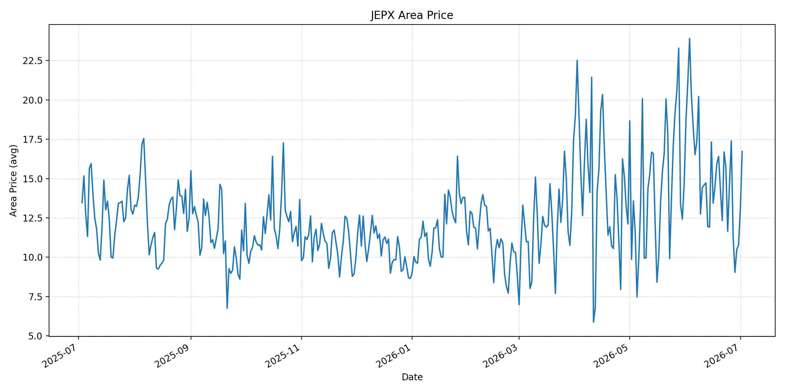
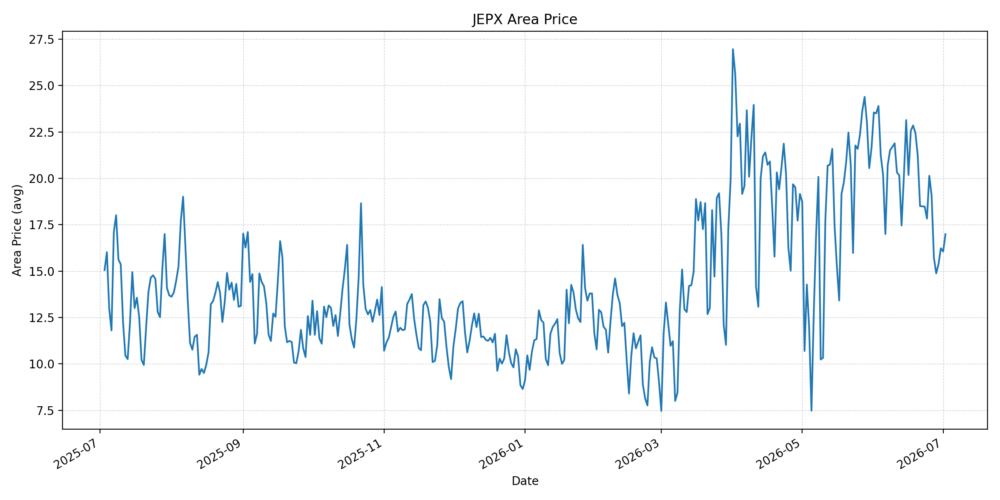
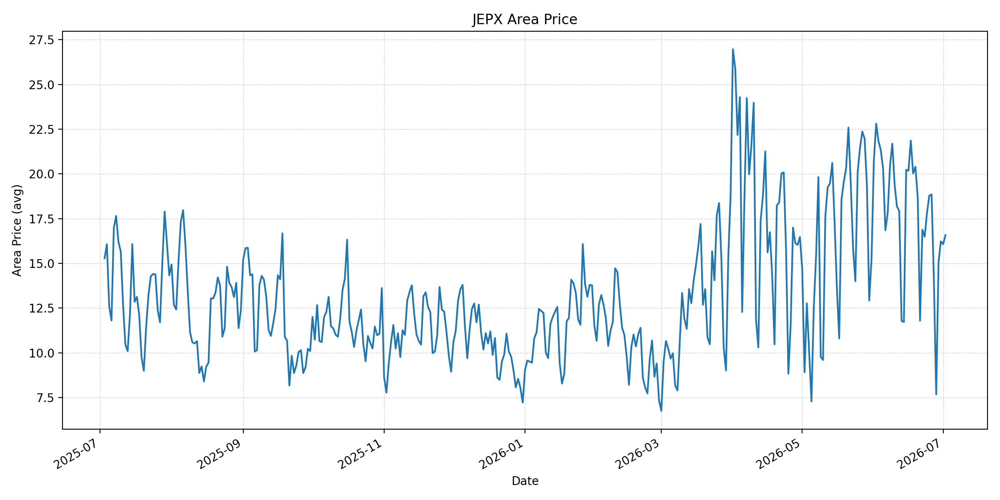
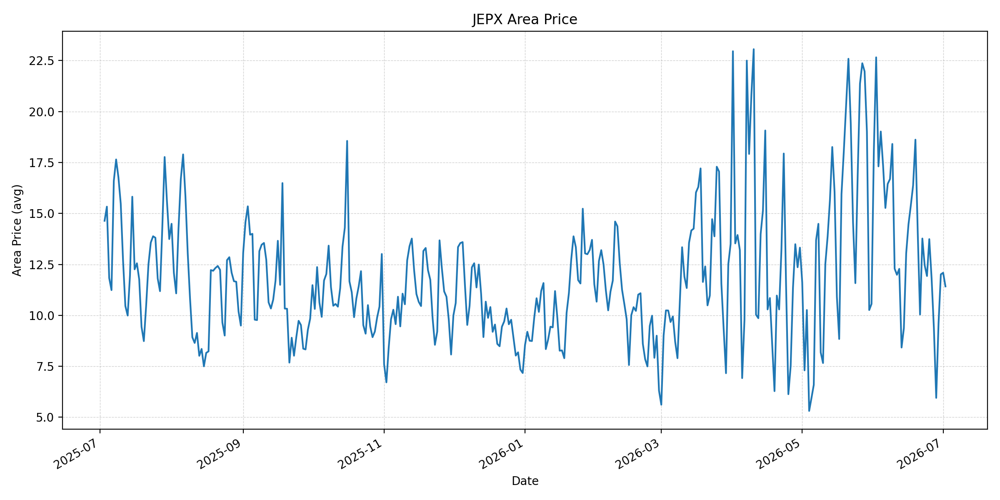
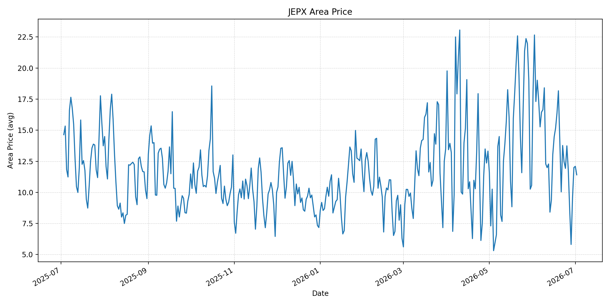
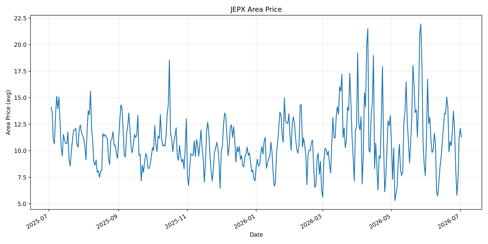
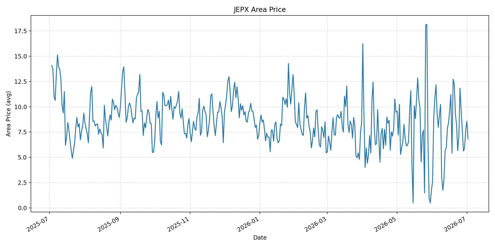
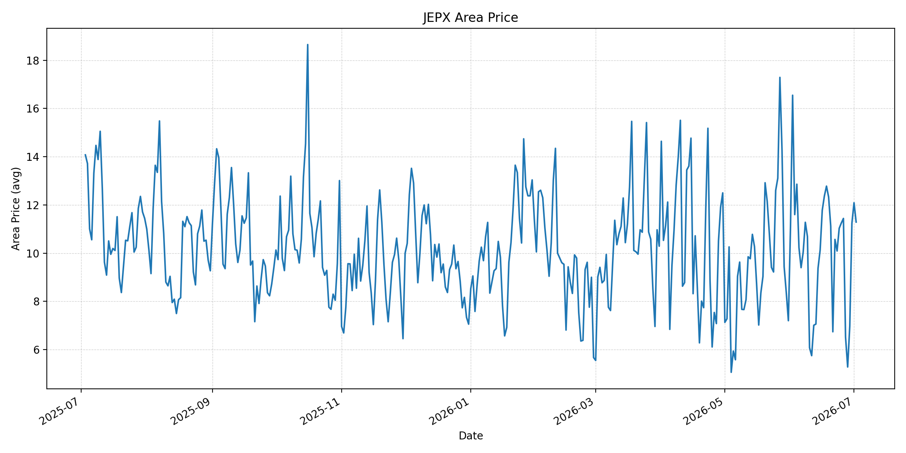
短期トレンド
JKMとJEPXシステムプライスの推移グラフ
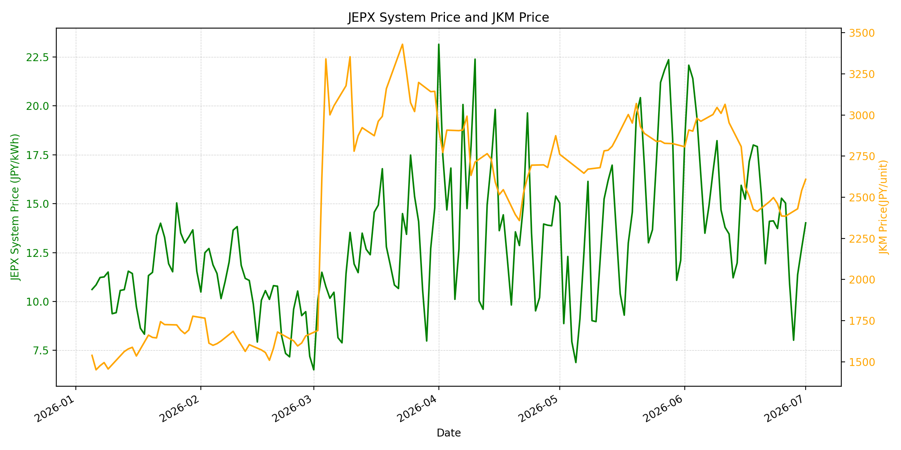
WTIの推移グラフ
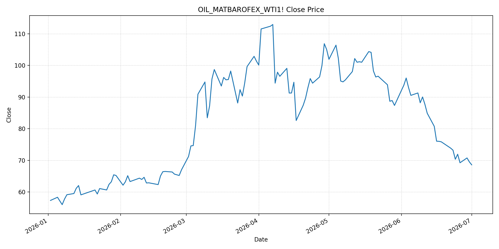
JEPXシステムプライス
JEPXは受渡日ベースの最新非空値で評価しています。最新値は 2026-07-02 分です。先週終値は 2026-06-25 時点の直近値、先月終値は 2026-06-30 時点の直近値で評価しています。
| エリア | 当日価格 | 前日価格 | 前日比（％） | 先週終値 | 先週比（％） | 先月終値 | 先月比（％） | 過去最高値 | 最高値比（％） |
|---|---|---|---|---|---|---|---|---|---|
| システム | 14.14 | 14.02 | 0.86 | 15.28 | -7.46 | 12.73 | 11.08 | 64.06 | -77.93 |
| 北海道 | 13.16 | 12.16 | 8.22 | 12.31 | 6.90 | 10.21 | 28.89 | 73.92 | -82.20 |
| 東北 | 16.72 | 13.09 | 27.73 | 14.62 | 14.36 | 10.78 | 55.10 | 84.92 | -80.31 |
| 東京 | 16.99 | 16.06 | 5.79 | 20.14 | -15.64 | 16.23 | 4.68 | 86.13 | -80.27 |
| 中部 | 16.58 | 16.07 | 3.17 | 18.78 | -11.71 | 16.23 | 2.16 | 52.06 | -68.15 |
| 北陸 | 11.42 | 12.09 | -5.54 | 13.74 | -16.89 | 12.01 | -4.91 | 46.48 | -75.43 |
| 関西 | 11.41 | 12.09 | -5.62 | 13.74 | -16.96 | 12.00 | -4.92 | 46.48 | -75.45 |
| 中国 | 11.29 | 12.09 | -6.62 | 13.74 | -17.83 | 11.26 | 0.27 | 46.48 | -75.71 |
| 四国 | 6.81 | 8.57 | -20.54 | 11.84 | -42.48 | 7.72 | -11.79 | 46.48 | -85.35 |
| 九州 | 11.29 | 12.09 | -6.62 | 11.25 | 0.36 | 11.24 | 0.44 | 40.54 | -72.15 |
LNG先物価格
最新値は 2026-07-01 の LNG(close) です。先週終値は 2026-06-24 時点の直近値、先月終値は 2026-06-30 時点の直近値で評価しています。
| 当日価格 | 前日価格 | 前日比（％） | 先週終値 | 先週比（％） | 先月終値 | 先月比（％） | 過去最高値 | 最高値比（％） |
|---|---|---|---|---|---|---|---|---|
| 2609.00 | 2541.00 | 2.68 | 2461.00 | 6.01 | 2541.00 | 2.68 | 10319.00 | -74.72 |
石油先物価格
最新値は 2026-07-01 の OIL(close) です。先週終値は 2026-06-24 時点の直近値、先月終値は 2026-06-30 時点の直近値で評価しています。
| 当日価格 | 前日価格 | 前日比（％） | 先週終値 | 先週比（％） | 先月終値 | 先月比（％） | 過去最高値 | 最高値比（％） |
|---|---|---|---|---|---|---|---|---|
| 68.58 | 69.50 | -1.32 | 70.34 | -2.50 | 69.50 | -1.32 | 123.70 | -44.56 |
ニュース
イラン情勢に関するニュース
- 2026年7月1日、APは、米国とイランの交渉担当者がカタール、パキスタンの仲介者と別々に会合し、協議継続で一致したと報じました。カタール外務省は「前向きな進展」があったとし、次回会合はハメネイ前最高指導者の葬儀後に調整される見通しです。 参照: AP, 2026-07-01
- 同AP報道では、レバノン停戦とホルムズ海峡の管理が交渉上の大きな争点として残っています。イラン側は米国との直接協議を避け、凍結資産返還やレバノン問題を仲介者と協議しています。 参照: AP, 2026-07-01
ホルムズ海峡経由の石油・LNGに関するニュース
- APは、米イランが60日間は通航料なしで船舶通航を認める暫定合意に達したものの、イランが航路管理と将来の通航料を主張していると報じました。イラン国営TVは、承認外ルートを使った船が座礁したとも伝えています。 参照: AP, 2026-07-01
- 2026年7月1日、Axiosは、ホルムズ海峡の通航再開で中東の石油輸送が想定より速く回復し、Brentは71.99ドル前後と戦前水準を下回ったと報じました。ただし通航量は約700万バレル/日で、戦前の約2000万バレル/日には届いていません。 参照: Axios, 2026-07-01
ホルムズ海峡経由でない石油・LNGに関するニュース
- 2026年7月1日、MarketWatchは、原油が6年ぶりの大きな四半期下落となり、米国・ベネズエラ・イラクの増産、中国の輸入減、備蓄放出、中東の代替輸送対応が供給逼迫を和らげたと報じました。 参照: MarketWatch, 2026-07-01
- 同日、MarketWatchは、Morgan Stanleyがホルムズ海峡の再開が想定より速いとして原油価格見通しを引き下げ、米国輸出の強さ、中国輸入の低迷、中東供給回復を背景に2027年の供給余剰を見込むと報じました。 参照: MarketWatch, 2026-07-01
日本国内のイラン戦争に関係するニュース
- 過去24時間で、JEPX制度、国内電力需給ルール、または日本政府の対イラン戦争関連対策を直接変更する主要な新規公表は確認できませんでした。
- 関連する国内材料として、経済産業省は2026年5月20日、2026年度夏季は全エリアで安定供給に最低限必要な予備率3％を確保できるため節電要請を実施しないと発表しています。一方で、国際情勢の変化、異常気象、火力発電所の地域集中はリスクとして明記されています。 参照: 経済産業省, 2026-05-20
インサイト
ニュース事項による日本の電力市場への影響（短期：数日〜1週間）
- JEPXシステムプライスは 14.14 円/kWhで前日比 0.86%、先週比 -7.46% です。東京は 16.99 円/kWhで先週比 -15.64% と低く、ホルムズ通航回復と原油安は短期の上値を抑えています。
- OILは 68.58 で前日比 -1.32%、先週比 -2.50% と下落しました。AxiosとMarketWatchが示す供給回復は燃料コスト心理を下げる材料ですが、通航量は戦前水準未満で、航路管理と通航料の対立は残ります。
- LNGは 2609.00 で前日比 2.68%、先週比 6.01% と反発しました。東北 16.72、北海道 13.16 など一部エリアは上昇しており、数日〜1週間では燃料安と地域需給が綱引きする展開です。
ニュース事項による日本の電力市場への影響（長期：1ヶ月〜半年）
- ホルムズ通航の回復と非ホルムズ供給の増加が続けば、OILは過去最高値比 -44.56%、LNGは -74.72% と低位にあり、日本の燃料費見通しは改善しやすいです。供給余剰見通しは長期価格の下押し材料です。
- 一方、APが報じる通航料と航路管理の争点は、1ヶ月〜半年の調達リスクです。60日間の猶予後にイランが料金や航路指定を再主張すれば、船腹・保険・調達コストが再び上振れします。
- 国内では節電要請なしの前提が維持されていますが、システム価格は先月比 11.08%、東北は 55.10% と月初から上昇しています。燃料安が進んでも、夏季需要と地域別供給力がJEPXを下支えする可能性があります。